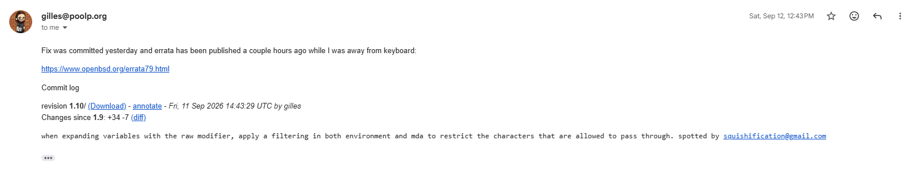

Introduction
While reviewing OpenSMTPD's mail delivery implementation, I found a command-injection vulnerability that allowed an unauthenticated SMTP client to influence command execution through attacker-controlled email address components.
The issue affected OpenSMTPD 7.8.0p1 (Portable) and involved the way SMTP envelope data was processed before being passed to a Mail Delivery Agent (MDA). More specifically, the interaction between the :raw token modifier, address sanitization, and MDA environment construction created paths through which shell-significant characters could reach command execution.
The vulnerability is tracked as CAN-2026-2037511 and classified as CWE-78 (OS Command Injection).
What made this finding interesting was that OpenSMTPD already had sanitization mechanisms in place. The problem was that those protections did not remain consistent across the different stages of MDA processing. A value that was treated as an email address during SMTP handling could later be interpreted as part of a shell command.
I reported the issue to the OpenSMTPD developers on August 24, 2026. The finding was reproduced by a developer on September 4, and a fix was committed on September 6. OpenBSD subsequently published errata 015 for OpenBSD 7.9.
Understanding the MDA Execution Path
Before looking at the vulnerability, it is important to understand how OpenSMTPD handles mail delivery.
When an SMTP client submits a message, OpenSMTPD processes the sender and recipient addresses and constructs the envelope information used during delivery. Depending on the server's configuration, the message may eventually be passed to a Mail Delivery Agent.
An MDA is responsible for delivering the message to its destination. OpenSMTPD supports configurable delivery commands and provides a set of variables that can be expanded when constructing those commands.
These variables can contain information derived from the SMTP envelope, including:
SENDERLOCALRECIPIENTDOMAINEXTENSIONORIGINAL_RECIPIENT
This functionality is useful for administrators who need to customize mail delivery. However, it also creates a security boundary: values originating from an external SMTP client must remain safe when they are inserted into commands or passed through an execution environment.
I focused my investigation on the code responsible for expanding these variables and preparing the environment used by the MDA.
The First Sanitization Layer
The first relevant restriction occurs during SMTP address validation.
OpenSMTPD uses valid_localpart() in util.c to determine which characters are accepted in an email address's local part. This prevents certain characters from entering the envelope in the first place.
The implementation uses MAILADDR_ALLOWED to define the permitted character set.
At first glance, this appears to provide a reasonable restriction. Characters that could be dangerous when interpreted by a shell are restricted before the address is accepted.
However, address validation and command sanitization serve different purposes.
An email address is not necessarily safe to insert into a shell command simply because it passed the application's address parser. The application still needs to account for how that value will be interpreted later.
That second layer existed in OpenSMTPD's MDA variable expansion code.
The :raw Modifier
The most direct path I identified involved the documented :raw modifier in OpenSMTPD's MDA configuration language.
MDA variables support modifiers that change how a value is formatted during expansion. The :raw modifier is intended to return the original token value without the normal escaping behavior.
The relevant implementation is in mda_variables.c, specifically mda_expand_token().
During token expansion, the implementation tracks whether the raw modifier has been requested. The normal escaping logic was conditional on that flag:
if (!raw && replace)
for (i = 0; (size_t)i < strlen(tmp); ++i)
if (strchr(MAILADDR_ESCAPE, tmp[i]))
tmp[i] = ':';The important detail is the !raw condition.
When a token was expanded normally, characters contained in MAILADDR_ESCAPE were replaced with colons. When the :raw modifier was used, that escaping step was skipped.
This behavior was intentional from a formatting perspective. The problem was that the modifier also bypassed a security control that the MDA execution path relied upon.
Characters that survived SMTP local-part validation could therefore reach the generated command without receiving the expected shell escaping.
The vulnerability was not caused by an obscure parsing mistake or an undocumented feature. It came from the interaction between an existing configuration feature and a sanitization mechanism that assumed escaping would always take place.
From an Email Address to Command Execution
The next step was understanding how the expanded value reached an execution context.
In the MDA delivery path, OpenSMTPD constructs the command and launches it through:
/bin/sh -cThis means the expanded command is ultimately interpreted by a shell.
When attacker-controlled address data is inserted into a command through a :raw expansion, shell-significant characters can retain their original meaning. If the resulting command contains valid shell syntax, the shell may interpret those characters as operators or command substitutions rather than ordinary address data.
This is the critical transition:
- An unauthenticated SMTP client supplies an address containing attacker-controlled characters.
- OpenSMTPD accepts the address under its local-part validation rules.
- The MDA configuration expands an address-derived token using
:raw. - The normal
MAILADDR_ESCAPEprocessing is skipped. - The expanded value is incorporated into the MDA command.
/bin/sh -cinterprets the resulting command.
The security boundary is crossed when data that originated as an email address becomes part of a shell command.
The practical impact depends on the target's MDA configuration. A system must have a custom MDA execution path that incorporates the affected values in a vulnerable way. This is not a claim that every OpenSMTPD installation is automatically exploitable regardless of its delivery configuration.
A Second Path: MDA Environment Variables
While investigating the command expansion logic, I also examined how OpenSMTPD constructed the environment passed to the MDA.
This led to another issue in mda_unpriv.c.
The implementation populated environment variables using values derived from the SMTP envelope. These included the sender, recipient, original recipient, local part, domain, and extension.
For example, the environment was constructed using values such as:
xasprintf(&mda_environ[idx++], "DOMAIN=%s",
deliver->rcpt.domain);
xasprintf(&mda_environ[idx++], "ORIGINAL_RECIPIENT=%s@%s",
deliver->rcpt.user, deliver->rcpt.domain);
xasprintf(&mda_environ[idx++], "RECIPIENT=%s@%s",
deliver->dest.user, deliver->dest.domain);
xasprintf(&mda_environ[idx++], "LOCAL=%s",
deliver->rcpt.user);The same approach was used for SENDER and EXTENSION.
These variables are legitimate MDA features, but their contents originate from data that can be influenced by an SMTP client.
The problem becomes relevant when a delivery command or the program it invokes uses those values to construct another command. In particular, a shell-based delivery utility can introduce another interpretation stage through functions such as system().
This is a separate path from the :raw command-expansion issue. The two should not be confused:
- The
:rawpath can bypass the normal escaping performed during MDA command expansion. - The environment path exposes envelope-derived values to the MDA process without applying the additional filtering required for that execution context.
Both paths demonstrate the same underlying problem: values originating from an external email address were not consistently sanitized before reaching command-execution functionality.
Exploitation Considerations
The vulnerability was reachable through an unauthenticated SMTP connection when the target used an affected MDA configuration.
One practical complication was the character restriction imposed by valid_localpart(). The SMTP address parser did not accept arbitrary shell syntax, so a payload had to be constructed using characters that were permitted in the local part.
This did not eliminate the issue. Shell expansion provides ways to represent certain characters without including them literally. For example, ${IFS} can represent whitespace during shell expansion.
My proof of concept used this property to construct a command from an SMTP envelope value. The resulting test demonstrated command execution without requiring SMTP authentication.
For validation, I used a controlled command-execution test rather than relying on an ambiguous SMTP response. The important evidence was that the value supplied through the SMTP transaction reached the MDA execution path and was interpreted by the shell.
The repository contains the proof-of-concept implementation and a demonstration recording:
The exact behavior depends on the configured MDA command and delivery path. It is therefore important to distinguish the existence of the vulnerable code path from the conditions required to reach it on a particular deployment.
Root Cause
The underlying issue was inconsistent sanitization across the MDA execution path.
OpenSMTPD had two relevant protections:
- SMTP local-part validation restricted the characters accepted in an address.
- MDA variable expansion applied escaping before inserting values into commands.
Neither protection was sufficient on its own.
The :raw modifier could bypass the second layer, while the environment construction in mda_unpriv.c passed envelope-derived values to the MDA without applying equivalent filtering.
The result was that the security of the delivery command depended on which expansion path was used and how the MDA subsequently handled its environment.
The application was treating the same data differently at different stages. It was initially parsed as an email address, then expanded into a command or environment variable, and eventually exposed to shell interpretation.
That is the central design mistake: sanitization was tied to a particular expansion path rather than being enforced consistently at the point where untrusted values crossed into command execution.
Remediation
The OpenBSD fix addressed both the command-expansion and environment-construction paths.
1. Correcting :raw escaping
In mda_variables.c, the patch changed how the escaping character set was selected.
Previously, the raw flag caused the normal escaping step to be skipped. The updated implementation selects an appropriate character set based on whether the token is raw:
if (replace) {
escape = raw ? MAILADDR_RAW_ESCAPE : MAILADDR_ESCAPE;
for (i = 0; (size_t)i < strlen(tmp); ++i)
if (strchr(escape, tmp[i]))
tmp[i] = ':';
}The important change is that :raw no longer means that shell-sensitive characters are left untouched.
Instead, raw tokens use MAILADDR_RAW_ESCAPE, ensuring that the characters covered by that set are still replaced before the expanded value is used.
2. Sanitizing the MDA Environment
The patch also introduced mda_escape() in mda_unpriv.c.
static void
mda_escape(char *dst, size_t dstsz, const char *src)
{
size_t i;
if (strlcpy(dst, src, dstsz) >= dstsz)
errx(1, "mda environment value too long");
for (i = 0; dst[i] != '\0'; i++)
if (strchr(MAILADDR_RAW_ESCAPE, dst[i]))
dst[i] = ':';
}This function performs a bounded copy of the source value and replaces characters included in MAILADDR_RAW_ESCAPE.
The patch applies it to the sender, recipient, destination, and subaddress components before constructing the MDA environment.
Specifically, it covers:
- Sender user and domain.
- Original recipient user and domain.
- Destination user and domain.
- MDA subaddress.
The environment variables are then populated using these sanitized copies instead of the original envelope values.
3. Tightening Local-Part Validation
The patch also updates MAILADDR_ALLOWED.
Several characters that were previously accepted, including $, backticks, braces, and the pipe character, are removed from the permitted set.
The patch defines the additional raw-escaping character set as:
#define MAILADDR_RAW_ESCAPE "!#$&'*?`{|}~"Together, these changes address the different stages at which envelope data could reach command execution. The fix does not rely on the assumption that one layer of validation will protect every later use of the value.
Disclosure Timeline
I reported the vulnerability to the OpenSMTPD developers on August 24, 2026.
The issue was independently reproduced by an OpenSMTPD developer on September 4, 2026. A fix was committed on September 6, modifying both mda_unpriv.c and mda_variables.c, along with the permitted local-part character set.
OpenBSD subsequently published errata 015 for OpenBSD 7.9 on September 14, 2026. The advisory describes the issue as one in which a custom MDA could execute arbitrary code as an unprivileged recipient user.
The finding is tracked as CAN-2026-2037511.
The affected software identified in my research was OpenSMTPD 7.8.0p1 (Portable). The OpenBSD errata provides the corresponding source-level remediation for OpenBSD 7.9.

Final Thoughts
This finding was a good example of why reviewing individual sanitization functions is not enough. The escaping logic in OpenSMTPD existed for a reason, and the :raw modifier also had a legitimate purpose. The problem was that the two were allowed to interact without preserving the security guarantees expected by the command-execution path.
The environment-variable issue made the investigation more interesting because it showed that fixing the token-expansion behavior alone would not address every way envelope data reached the MDA.
When reviewing software that builds commands from user-controlled input, I pay particular attention to every transformation between the original input and the final execution point. Data can pass through several functions, each with different assumptions about what has already been validated. A value that is safe in one context may become dangerous when it is reused in another.
In this case, the SMTP address parser, MDA token expansion, environment construction, and shell execution all played a part. Understanding how those components interacted was what made it possible to identify the underlying vulnerability and demonstrate its impact.
← Back to all posts